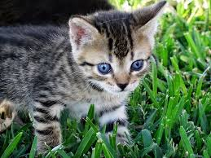
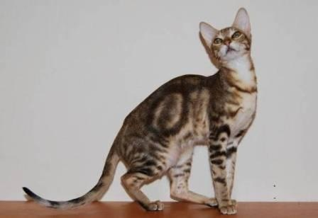

 <!DOCTYPE <!DOCTYPE html>
 <html lang="en" dir="ltr">
   <head>
     <meta charset="utf-8">
     <title></title>

   </head>
   <body>

   </body>
 </html>


  </head>
    <meta charset="utf-8">
    <title></title>
  </head>
  <body>

  </body>
</html>

  <head>
    <meta charset="utf-8">
    <title></title>
    <link href= "css/styles.css" type="text/css" rel="stylesheet">
  </head>
  <body>
  <u>
    <h1>  Sally The Pet </h1>
   </u>
   <u> <br> <br>
     <h3> What type of pet is Sally?  </h3>
   </u>
   <p> Sally is a rare type of cat called Ojos Azules."Little is known about this breed, due to its rarity. But, some have been known to be active, friendly, and affectionate. They are also easy to groom, and do not require much brushing".
<u>
  <h3> This is Sally </h3>
</u>


<br> <br>
<u> <h3>  Favorite Activities <h3> <u/>
<ol>
  <li>Going for a walk.</li>
  <br>
  <li>Playing with strings.</li>
  <br>
    <li>Food Hunting.</li>
